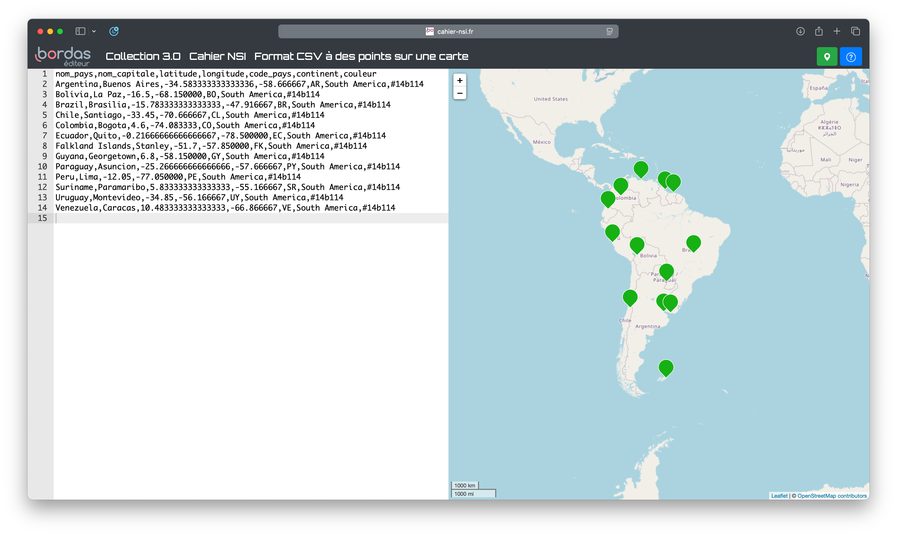

Exercices
Vous trouverez ci-dessous les exercices de cette séquence.
-
Les exercices marqués avec se réalisent sans ordinateur.
Ceux indiqués par nécessitent un ordinateur. -
Le niveau de difficulté est indiqué par des étoiles :
- → Exercices pour s'approprier les notions.
- → Exercices pour renforcer vos compétences.
- → Exercices pour vous challenger et tester vos acquis.
Les corrections sont généralement disponibles, mais elles ne doivent être consultées qu'après validation de votre production par l'enseignant.
Tables de données
Exercice 1 –
On donne l'affectation suivante :
billets = [
{'nom': 'Riton', 'dest': 'Rio'},
{'nom': 'Rita', 'dest': 'Roanne'},
{'nom': 'Florence', 'dest': 'Florence'},
]
-
Quelle expression Python a pour valeur
Ritonaprès cette affectation ?billet['Riton']billets['Riton'][0]nom[0]['billets']billets[0]['nom']
-
Qu'affiche le programme Python suivant après l'affectation ci-dessus ?
Correction
-
billets[0]['nom']puisqueRitoncorreponds aunomdu premier enregistrement de la table (indice 0). -
Un seul enregistrement correspond au critère de sélection :
Florencequi va àFlorence. Son enregistrement étant le 3e de liste, son indiceisera donc 2.
Exercice 2 –
Qu'affiche le programme Python suivant ?
voyages = [
{'nom': 'Riton', 'dest': 'Rio'},
{'nom': 'Rita', 'dest': 'Roanne'},
{'nom': 'Florence', 'dest': 'Florence'},
]
durees = {
{'dest': 'Rio', 'nbheures': 12},
{'dest': 'Roanne', 'nbheures': 1},
}
for i in range(len(voyages)):
for j in range(len(durees)):
if voyages[i]['dest'] == durees[j]['dest'] and durees[j]['dest'] >= 2 :
print(voyages[i]['nom'])
Correction
Seul le voyage à Rio dure plus de 2 heures (n'ayant pas d'information pour Florence). Ainsi, le programme affichera uniquement Riton.
Exercice 3 –
Trouver toutes les erreurs de syntaxe dans le fichier CSV ci-dessous :
Correction
Ligne 1 : ok
Ligne 2 : ok
Ligne 3 : Il manque la valeur pour Année : Je vis...,Labé,J'ai chaud extrême en endurant froidure,1555
Ligne 4 : La virgule dans la citation va poser problème puisqu'il s'agit également du délimiteur. Il faut entourer la citation de guillemets : Heureux..,du Bellay,"Heureux qui comme Ulysse, à fait...",1552
Ligne 5 : Les guillemets sont mals positionnés. Lors que l'importation, seul Titre et Auteur auront une valeur. Version rectifiée : La voix,Baudelaire,Mon berceau s'adossait...,1857
Exercice 4 –
On souhaite stocker dans une table l'inventaire d'un magasin.
Ce dernier vend des biens dont il possède une certaine quantité en stock.Les produits peuvent être indisponibles (épuisés chez le fournisseur) et être en vente libre ou non. Proposer des noms de descripteurs et types Python pour une telle table d'inventaire.
Correction
- produit : le nom du produit (chaine de caractères)
- prix : le prix du produit (nombre flottant)
- quantité : la quantité d'exemplaire en stock magasin (nombre entier)
- épuisé : indique si le produit est toujours en stock fournisseur (booléen)
- libre : indique si le produit est en vente libre (booléen)
Exercice 5 –
On considère la table suivante :
| réf. | désignation | prix | qté |
|---|---|---|---|
| 18635 | lot crayons HB | 2,30 | 1 |
| 15223 | stylo rouge | 1,50 | 3 |
| 20112 | cahier petits carreaux | 3,50 | 2 |
Écrire cette table au format CSV
Exercice 6 –
- Télécharger ce fichier : pokedex.csv
- Ouvrir ce fichier CSV avec LibreOffice Calc. Observer l'importance de préciser les délimitateurs.
- L'ouvrir ensuite avec un éditeur de texte pour observer sa construction.
Exercice 7 –
-
Ouvrir LibreOffice Calc et créer un tableau ayant 3 colonnes : \(n\), \(n^2\) et \(n^3\) et 21 lignes (descripteurs + \(n\) allant de 1 à 20).
-
Enregistrer le fichier
-
Aller dans le menu
FichierpuisEnregistrer souset enfin choisirtext csv. Choisir la virgule comme séparateur. -
Ouvrir ensuite le fichier
csvainsi créé avec un éditeur de texte et observer la structure du document.
Importation et exportation
Exercice 8 –
- Télécharger le fichier Python capitales.py et le fichier CSV capitales.csv et les mettre dans le même répertoire.
- Écrire l'instruction d'appel de la fonction
lecture_fichier()qui permet de lire le fichiercapitales.csvet d'affecter son contenu dans une variable appeléetable. - Écrire une instruction Python qui permette d'afficher les descripteurs de la table ainsi importée.
- Combien de capitales différentes contient la variable
table?
Correction
- Pas de correction
table = lecture_fichier("capitales.csv")print(table[0])print(len(table)-1)
Exercice 9 –
On considère le fichier CSV construit à l'exercice 5.
- Écrire un programme qui lit le fichier CSV et en extrait une table de données sous la forme d'une liste de liste.
- Modifier le programme pour qu'il génère une liste de dictionnaire.
Correction
Dans cette correction, le fichier CSV est nommé : test.csv.
Exercice 10 –
Voici la spécification d'une fonction lecture_fichier permettant d'importer un fichier CSV ayant pour séparateur la virgule:
| Importation de fichier CSV | |
|---|---|
- Compléter la fonction en remplacant tous les
.... - On propose de simplifier la fonction. Compléter cette nouvelle version qui crée la fonction en compréhension :
Correction
-
def lecture_fichier(nom_fichier: str) -> list : ''' Définie et renvoie une liste de listes contenant toutes les données d'un fichier CSV passé en argument. - nom_fichier : le nom de fichier CSV à importer ''' with open(nom_fichier, newline="") as fichier: lecteur = csv.reader(ficher, delimiter=",") table = list(lecteur) return table
Exercice 11 –
- Télécharger ce fichier : pokedex.csv
-
Copier et exécuter ce code :
-
Contrôler que la variable
tableest bien une liste de dictionnaire. -
Le code précédent construit la liste
tablepar ajouts successifs. Transformer le code pour la construire en compréhension.
Exercice 12 – Exerice 12 -
Voici une proposition de fonction permettant l'exportation d'une liste de liste Python en fichier CSV :
- Compléter la fonction.
- En vous basant sur cette fonction, donner la spécification d'une fonction
exporter_dictionnairequi exporte en CSV une liste de dictionnaire.
Correction
-
def exporter(nom_fichier: str, table: list, descripteurs: list) -> None: ''' Écrit dans un fichier le contenu d'une table en connaissant ses descripteurs. - nom_fichier: le nom de fichier à créer, d'extension CSV. S'il existe, il sera écrasé, sinon il sera créé. - table : la table à exporter dans le fichier - descripteurs: une liste de str contenant les descripteurs de la table. ''' with open(nom_fichier, "w", newline="") as fichier: writer = csv.DictWriter(fichier, descripteurs, delimiter=";") writer.writeheader() writer.writerows(table)
Manipulation et traitement
Exercice 13 –
- Créer un fichier
capitales.py - Télecharger le fichier CSV capitales.csv dans le même répertoire que le fichier Python.
- Importer ce fichier dans une variable
table. - Créer une liste
noms_capitalescontenant uniquement les noms de toutes les capitales du fichier. - Créer une liste
europecontenant toutes les entrées de la table relatives à une capitale Européenne.
Correction
- Pas de correction
- Pas de correction
table = lecture_fichier("capitales.csv")noms_capitales=[info[1] for info in table]europe=[info for info in table if info[5]=='Europe']
Exercice 14 –
- Télécharger ce fichier : pokedex.csv
- Importer ce fichier dans une variable
pokedex. - Créer une nouvelle table
feucontenant uniquement les pokémons de type feu. - Combien y-a-t-il de pokémon de type feu ?
- Créer une liste
noms_pokemon_feune contenant que le nom de chacun de ces pokémons.
Correction
- Pas de correction
feu = [pokemon for pokemon in pokedex if pokemon[2]=="feu"]len(feu): Il y a 29 pokémons de type feu dans ce pokedex.nom_pokemon_feu = [pokemon[1] for pokemon in feu]
Exercice 15 –
À partir du fichier pokedex.csv télécharger à l'exercice précédent, créer une liste en compréhension ne contenant que les prénoms des pokémons plante ayant plus de 80 points de vitesse.
Correction
pokemon_plante_rapide = [pokemon[1] for pokemon in pokedex if pokemon[2]=='plante' and int(pokemon[6])>=80]
Soit : ['Méganium', 'Massko', 'Jungko', 'Ceriflor', 'Phyllali', 'Lianaja', 'Majaspic', 'Feuiloutan', 'Fragilady']
Exercice 16 –
- Créer un fichier
recherche_capitales.py - Télecharger le fichier CSV capitales.csv dans le même répertoire que le fichier Python.
- Importer ce fichier dans une variable
table. - Stocker dans une variable
amerique_du_sudtous les enregistrements de la table concernant une capitale sur le continent sud-américains. - Exporter le résultat de la recherche dans un fichier CSV nommé
recherche1.csv. - Aller sur ce site est vérifier le contenu de
recherche1.csv.
Correction
- Pas de correction
- Pas de correction
- Voici une capture d'écran du résultat attendu : 
{kind=link}
Exercice 17 –
En utilisant le fichier capitales.csv de l'exercice précédent,
- Créer une liste en compréhension ne contenant que la longitude de Paris.
- Rechercher toutes les capitales ayant une longitude voisine de celle de Paris, c'est-à-dire distantes de plus ou moins 1 degré de longitude.
Correction
-
longitude_paris = [capitale[3] for capitale in table if capitale[1]=="Paris"] -
Remarque : Il sera peut-être nécessaire d'enlever les descripteurs de la table afin de ne pas causer d'erreur de conversion :
voisines = [capitale[1] for capitale in table if longitude_paris[0]-1<=float(capitale[3])<=longitude_paris[0]+1]table.pop(0).
Fusion de table
Exercice 18 –
Réaliser l'activité 539a-9271423 sur Capytale.
Correction
Disponible sur Capytale sur demande